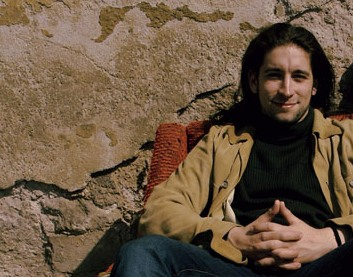

01
Producer
Development, creative strategy, pitch positioning and production-oriented thinking for film, animation and immersive projects.
I am a producer, writer and multidisciplinary maker with a background in economics, film, animation, AR/XR and collaborative story development.

I originally trained as an economist and began my career in regional development, working in strategic and operational planning. After a period in Indonesia I gradually moved toward animation, film and creative technology.
Today my work brings together story, production logic, visual thinking and collaborative development. I am especially interested in projects where a clear human question meets an ambitious creative form.
I currently live in Budapest with my wife and our three daughters. Outside work, we enjoy Indonesian food and climbing :)
Development, creative strategy, pitch positioning and production-oriented thinking for film, animation and immersive projects.
A collaborative way of working: connecting ideas, people, stories, systems and points of view.
Literary work spanning books, prose, children’s stories, essays, adaptations and story-world development.
As a producer, I focus on the development phase where the creative identity of a project is formed: the premise, characters, tone, audience, visual direction and pitch materials. My work is to help turn a promising idea into a coherent, communicable and production-aware project.
Executive Producer of NORTH, an animated feature inspired by Hans Christian Andersen’s The Snow Queen. The film premiered in 2025 and is expected to reach audiences in more than 60 countries.
Development and production of immersive content where spatial storytelling, interaction and visual design support a clear narrative experience. The focus is on meaningful use of format: not technology for its own sake, but presence, perspective and audience engagement.
Experience as part of television series writers’ rooms, contributing to story development, episode thinking and collaborative narrative work.
Pixar's Braintrust Method is close to the way I think and work. It is a non-hierarchical creative process built on honest feedback, multiple perspectives and shared responsibility for the work. It does not replace the author’s voice; it helps the author see the project more clearly.
“For me, a Braintrust creative is someone who helps connect ideas, people, stories, systems and perspectives.”
Feature films, animation projects, series concepts, novels, short stories, treatments, pitch decks and early-stage creative material that needs honest but constructive development.
My writing appeared regularly in Liget Műhely as well as in printed publications for young readers. I am the author of various novels, including Cyclopedia of Nonexistent Words (Nemlétező Szavak Enciklopédiája). This literary background continues to influence my work as a producer: I approach projects through character, atmosphere, rhythm, moral ambiguity and the deeper emotional logic of a story world.
Every project begins with a person under pressure. What do they want? What are they hiding? What are they afraid to admit? Once that is clear, structure, tone, visuals and production decisions can serve the same purpose.
“Strategic thinking, literary experience and production reality can work together — if the story has a human center.”
For producing, Braintrust sessions, story development, writing, animation, AR/XR content or pitch materials, feel free to get in touch.